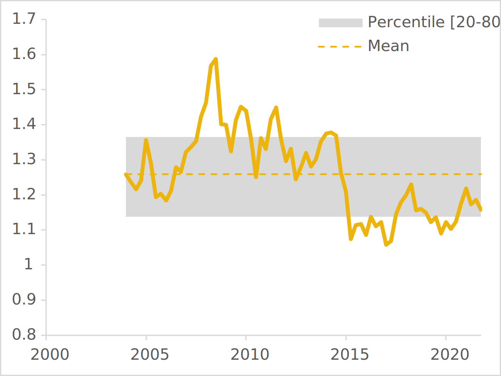
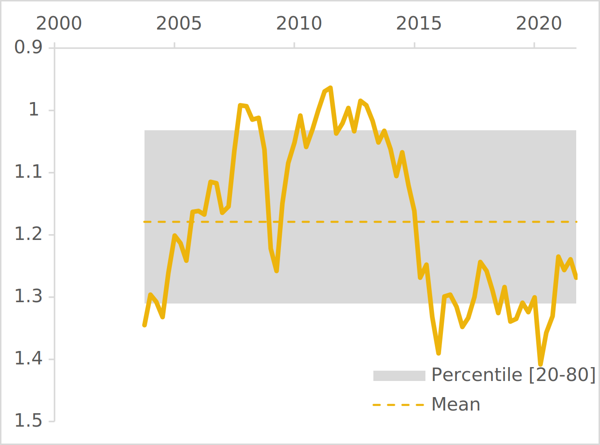

| Share in FX reserve (Source: IMF) |
|
 |
Share in global payments (Source: IMF Paper, World Bank, SWIFT and others) |
| FX market turnover (Source: BIS) |
|
| EUR* includes pre-euro currencies before 2000 |
Money is used as a store of value, a medium for exchange, and a unit of account. A currency’s performance in the above can be assessed by looking at its share in Foreign Exchange (FX) reserve, global payments (say from SWIFT and exports invoicing data), and FX market turnover.
The 8 largest currencies are
|
Hegemon |
USD |
|
Strong Contender |
EUR |
|
Dark horses |
JPY, GBP |
|
Specialty players |
AUD, CAD, CHF, CNY |
| Share in FX reserve (Source: IMF) |
|
|
Share in global payments (Source: IMF Paper, World Bank, SWIFT and others) |
| FX market turnover (Source: BIS) |
|
| EUR* includes pre-euro currencies before 2000 |
A country’s economic strength and network effects combine to shape a currency’s popularity.
| FX market turnover share vs. Export share (Source: BIS, WB) |
Gold and crypto are two noteworthy alternatives to sovereign currencies. Gold has long been a reserve asset while crypto has yet to become a serious option.
Both are widely traded in the market, but are rarely used for global payments. The landscape may change for crypto when it gains acceptance with time.
| Share in all reserve (Source: World Bank) |
|
 |
Daily market turnover (2019) (Source: BIS, World Gold Council, CoinMarketCap) |
|  | EUR/USD |
| USD/JPY | |
| GBP/USD | |
| AUD/USD | |
|  | USD/CAD |
| USD/CHF | |
| USD/CNY | |
| Gold/USD (troy oz) | |
| BTC/USD | |
| (Source: Yahoo Finance) |
Share in FX reserve: IMF
Share in global payments: IMF Paper
(export invoice currency by country),
World Bank
(export volume by country),
Taiwan government
(export volume of Taiwan)
FX market turnover: BIS
Gold reserve: World Bank
Gold trading volume: press releases of World Gold Council
Crypto trading volume: CoinMarketCap
Exchange rates: Yahoo Finance
2021 - Fed - The International Role of the U.S. Dollar : framework used by the Fed to show the international role of USD.
202205: Created